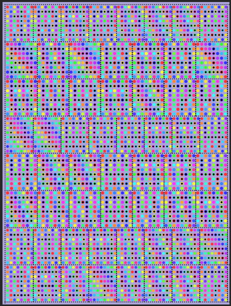
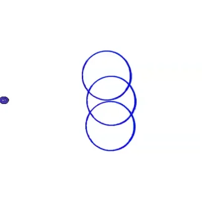

HW_ Week 5
Lillian-Yvonne:
I attemped to do a recreation/inspired by Jack Whitten’s “5 lines 4 Squares”, which I found in a Jack Whitten art book that I happened to have.
{kind=link}


Just for kicks, an animated version of recreation
Matthis G:
Xylor Jane - Dinnertine (2020) //Code I had trouble with the colour on this one!


Heidi He:
I used Lillian’s pixel and recreated a famous Klimt’s work code
Originals:


Recreations:


Sara M:
Achieved an interesting texture with acrylic paint:

The ones flying around in the back are like the H below ▾

I painted beer caps with acrylic paint and the texture was interesting but I’m not so sure about this one
I went with reenacting the process inspired both by Lilian Schwartz and Jack Whitten to experiment between material / analog objects and code.
My idea was to make some kind of poem / prayer with the letters O and H. I wanted to make video art inspired on Lilian Schwartz early video art. I ended up making tons of recordings of different animations but in retrospective they were kind of funny looking so I prefer to make gifs out of the ones I liked.
Here is the code for one of these animations: https://openprocessing.org/sketch/1371877
And my giphy profile where you can check out a couple more: https://giphy.com/channel/identikitten
If you’re interested in peeking at the ugly ducklings, let me know! The textures are definitely interesting and worth looking at for future reference on a different piece.